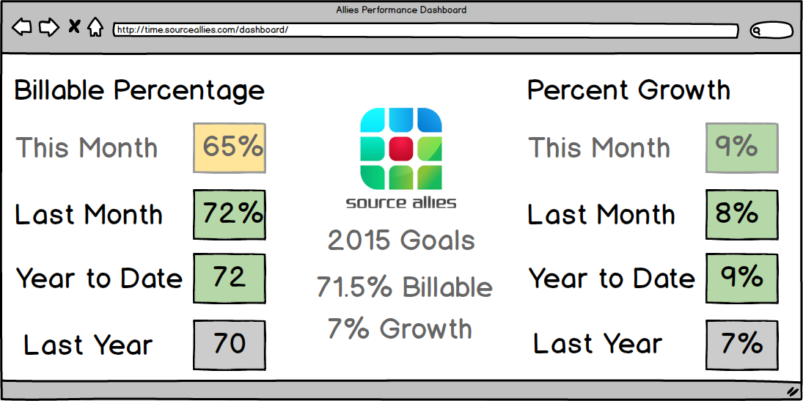
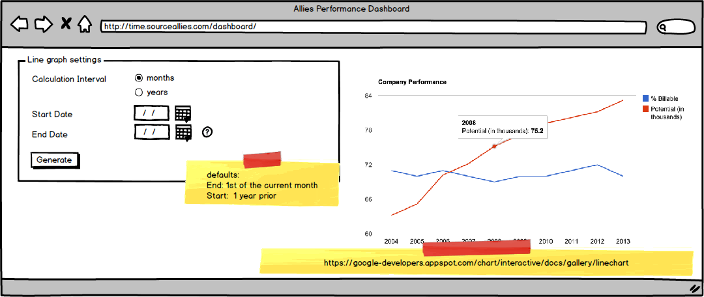

Source Allies Project Options
Luke and Jake asked a company in Des Moines that they had previously worked for if they had any work that they needed done that could be accomplished through a senior design project. They got back to use with two projects, outlined below:1) Internet of Things
Source Allies currently has an iPhone application called "Zone Beacon" that allows you to control lights throughout your house with your iOS device. They would like an Android counterpart to go alongside app to cover a broader market with the product.
Because the app has already been developed for iOS, requirements are numerous and they would be able to provide us with a test system that has hardware capable of simulating a kitchen, living room and other rooms throughout a house.
More information about ZoneBeacon: http://www.zonebeacon.com/
2) Business Metric Tracking
As a consulting company who produces revenue by sharing our expertise with other companies, one metric of the financial health for Source Allies is the ratio of hours billed to clients (numerator) over total hours available to bill to clients (denominator). Another useful metric would be to track growth from year to year.
Just as they show the health of their software on build monitors throughout the office, they would also like to show the financial health of the company. All of this data can be pulled in real-time from the human resource information and time tracking systems.
This project is a more classic web development project with RESTful calls to various services to produce a dashboard with information. Source Allies would provide a SME to work with us on the project (Mandy Smith).
Some proposed screenshots of dashboard:

